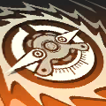

シンリョウ 星涼
基本情報
| ID | 007 |
|---|---|
| 名前 | シンリョウ (星涼) |
| レア度 | 4 |
| 属性 | 信 |
| タイプ | 補助型 |
| 戦闘方法 | 重装者 |
| 陣営 | 新月 |
| 職業 | 元超管局 オレンジブレイド特戦チーム 情報エージェント |
| 誕生日 | 9月3日 |
| CV | 洲崎 綾 |
| 実装Ver | 1.0.0 |
| 施設専攻 | |
| 施設効果 | |
| タグ | 治療強化 |
| 攻撃タイプ | 物理単体単発 |
専門探索
|
|
|
|
|
|
|---|---|---|---|---|
| 0 | 0 | 0 | 6 | 0 |
| 0 | 0 | 0 | 21 | 0 |
| 上: 専門探索(初期値) / 下: 専門探索(最大値) | ||||
基本ステータス
| 項目 | 初期値 | 最大値 |
|---|---|---|
| HP | 489 | 4170 |
| 攻撃 | 76 | 646 |
| 物理防御 | 358 | 3051 |
| 特殊防御 | 219 | 1867 |
| 行動速度 | 172 | 217 |
キャラ画像
立ち絵: fb / 認証絵: fb_awake / 後ろ姿: bg / スキン: skin*
必要強化素材
各認証段階の最大レベル到達までに使う作戦教本総数と、その段階自体の解放素材コスト。
ロム情報
候補1
クロニクルH4セット
候補2
フラッフィS4セット
スキル

スパイラル 通常攻撃 TPLv +8
タグ:
火力
シンリョウは選択した敵に129%の物理ダメージを与える。
スキルボーナス
(ボーナス情報なし)
ヒーリング 戦術スキル TPLv -40
タグ:
治療
シンリョウは攻撃304%に基づき選択した味方を治療する。
スキルボーナス
(ボーナス情報なし)

ハイオペ 超限スキル TPLv -40
タグ:
治療範囲
シンリョウは攻撃304%に基づき味方全体を治療する。
スキルボーナス
(ボーナス情報なし)
戦況解析 天賦 TPLv
タグ:
強化
戦闘開始時、新月陣営の味方の攻撃を10%、傷害軽減を5%を上昇させる。効果は2ターン持続する。
スキルボーナス
一重門
【ヒーリング】【ハイオペ】TPLv消費が10減少する。
【ヒーリング】【ハイオペ】TPLv消費が10減少する。
四重門
【戦況解析】初期TPLvを20増加する。
【戦況解析】初期TPLvを20増加する。
中級認証
【戦況解析】シンリョウが新月陣営の味方を治療した時、追加で目標の物理防御をさらに10%上昇させる。2ターン持続する。
【戦況解析】シンリョウが新月陣営の味方を治療した時、追加で目標の物理防御をさらに10%上昇させる。2ターン持続する。
上級認証
【戦況解析】治療した味方のHPが30%未満の時、シンリョウ自身の治癒率が20%上昇する。
【戦況解析】治療した味方のHPが30%未満の時、シンリョウ自身の治癒率が20%上昇する。
特級認証
【戦況解析】シンリョウが治療した味方が新月陣営の場合、同時に攻撃の20%に基づき自身を治療する。
【戦況解析】シンリョウが治療した味方が新月陣営の場合、同時に攻撃の20%に基づき自身を治療する。
サポート：ハイオペ サポート TPLv
タグ:
治療範囲
シンリョウは攻撃288%に基づき味方全体を治療する。
スキルボーナス
(ボーナス情報なし)
門階
一重門
【戦況解析】スキルボーナスを解放
【ヒーリング】【ハイオペ】TPLv消費が10減少する。
二重門
基本ステータス上昇を解放：HP+5.0%、攻撃+5.0%、物理防御+5.0%、特殊防御+5.0%
三重門
【戦況解析】スキル強化を解放
戦闘開始時、新月陣営の味方の攻撃を10%、傷害軽減を5%を上昇させる。効果は2ターン持続する。
四重門
【戦況解析】スキルボーナスを解放
【戦況解析】初期TPLvを20増加する。
五重門
基本ステータス上昇を解放：HP+12.0%、攻撃+12.0%、物理防御+12.0%、特殊防御+12.0%
較正情報
| 項目 | 内容 |
|---|---|
| 特定較正1 | 未実装 |
| 特定較正2 | 未実装 |